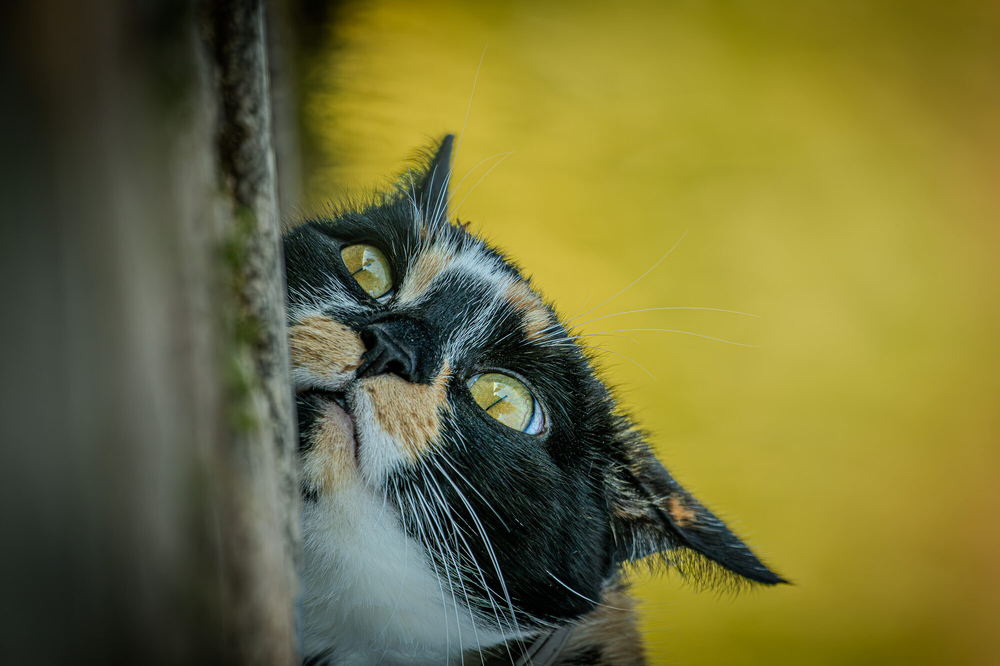
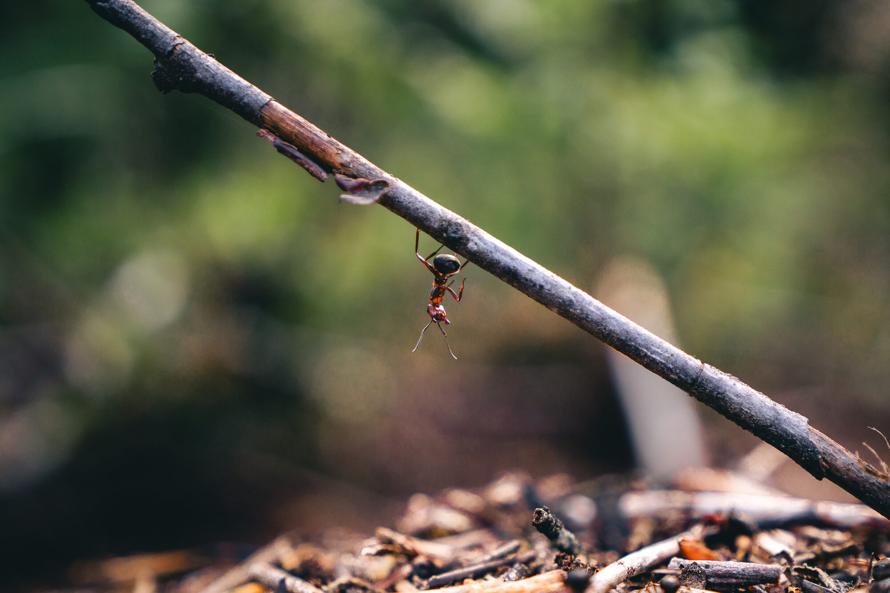
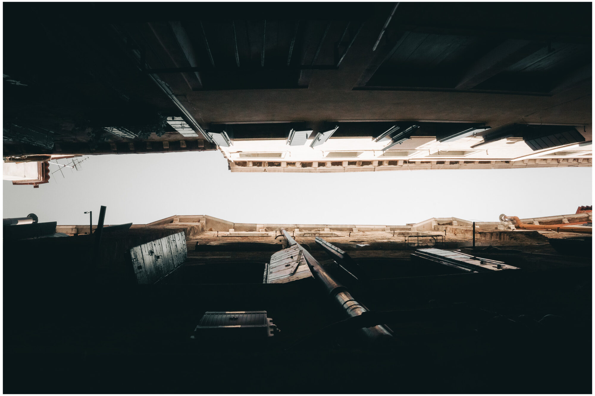
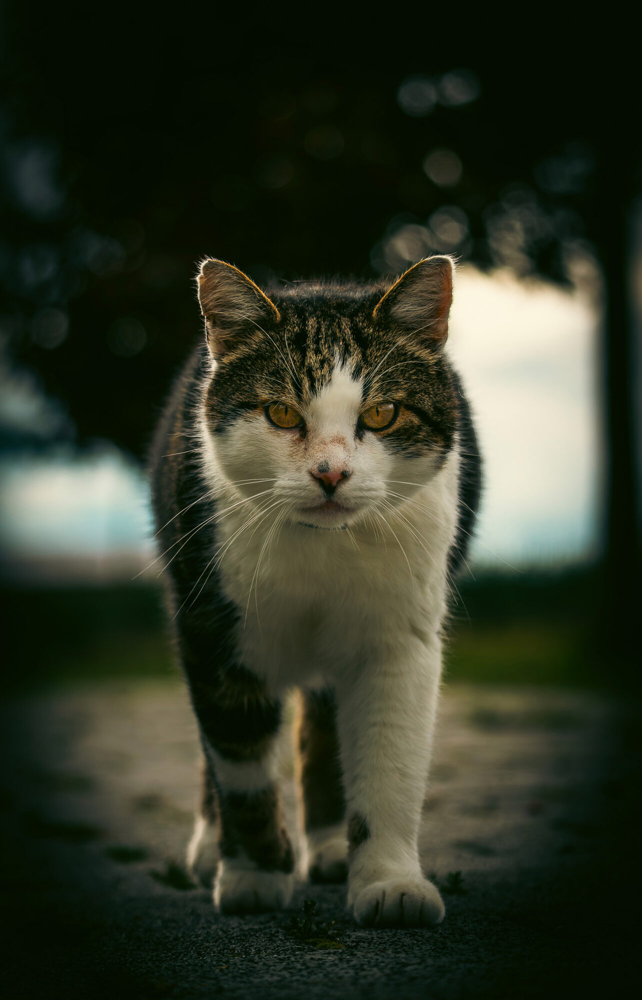
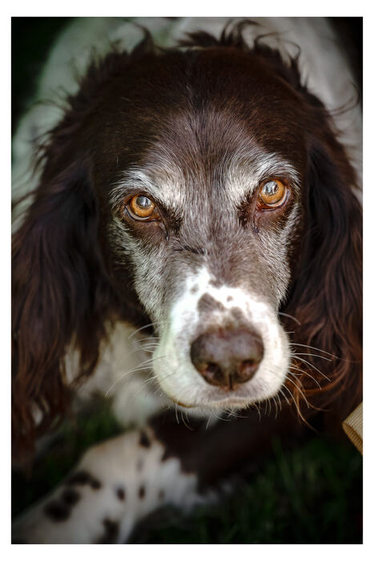
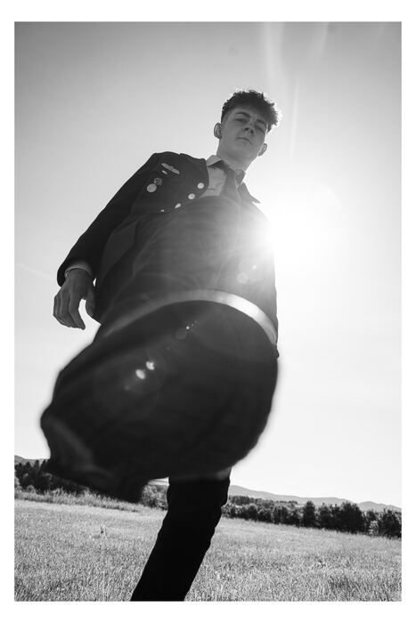
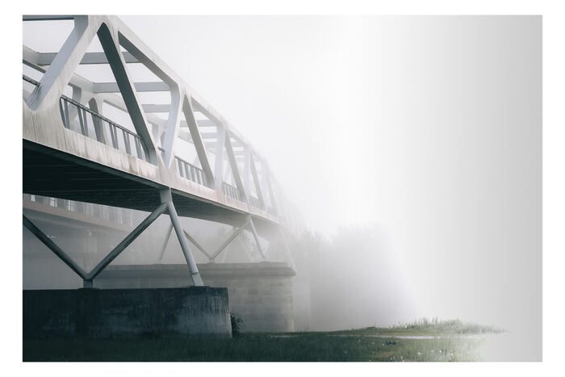
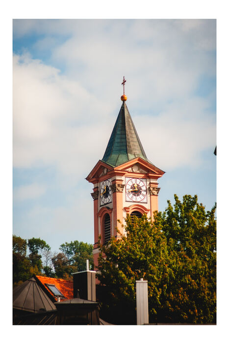
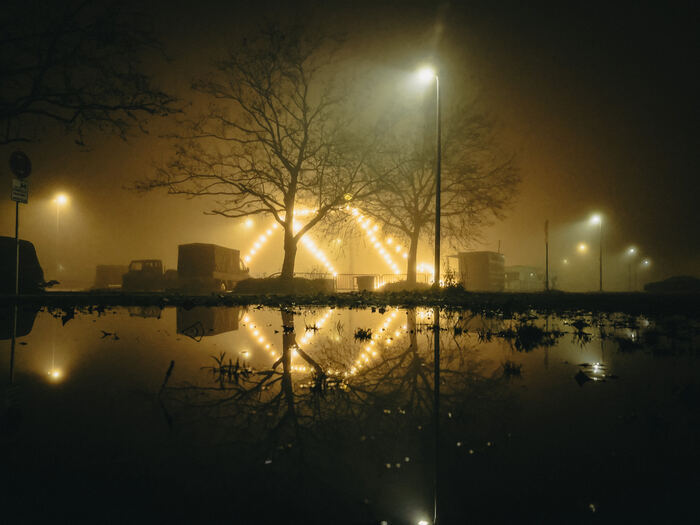
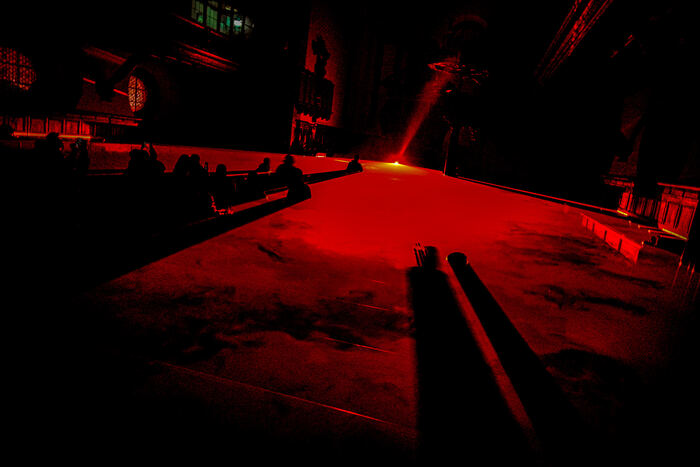

Effekt 01
Filmstreifen — zwei Reihen
Die Galerie bleibt stehen und zieht zwei versetzte Reihen seitwärts an dir vorbei. Danach läuft die Seite normal weiter.
Weiterscrollen01



Ideenfindung · v2
Erst Schriftarten, dann Header-Varianten, dann viele Scroll-Effekte. Scroll durch und sag mir zu jedem Block, was dich packt. Alles in Schwarz-Weiß.
Teil 1
Sechs moderne Schriften, jeweils mit deinem Namen, einer Zeile und Fließtext. Sag mir die Nummer, die dich am meisten überzeugt.
Teil 2
Vier Wege, oben einzusteigen. Sag mir, welcher Header dich am ehesten überzeugt — oder was du kombinieren würdest.
Momente festhalten — am Boden und in der Luft.
Fotografie, Drohnenvideo und Design — eine Handschrift, drei Werkzeuge.
Teil 3
Jetzt kommt Bewegung. Neun Abschnitte — sag mir bei jedem, ob rein in V7 oder nicht.
Effekt 01
Die Galerie bleibt stehen und zieht zwei versetzte Reihen seitwärts an dir vorbei. Danach läuft die Seite normal weiter.
Weiterscrollen
Effekt 02
Dein Favorit: Fotos ziehen sich beim Reinscrollen wie ein Vorhang auf. Mittelgroß, damit's nicht zu lang wird.
Langsam scrollen
Ein Blick, drei Welten — Natur, Architektur, Menschen.
Effekt 03
Jetzt repariert: die Überschrift heftet sich links fest, während rechts die Bilder durchlaufen.
Scrollen — links bleibt stehenSerie
Linien, Kanten, Perspektiven. Der Text steht still, deine Arbeiten laufen vorbei — der Leser bleibt bei dir.

Effekt 04
Das Konzept, das dich gepackt hat: ein riesiges Wort nur als Umriss, das langsamer scrollt als der Text davor.
DurchscrollenDer Umriss driftet, der Text zieht — zwei Tempi, viel Tiefe.
Effekt 05
Dasselbe Konzept, weitergedacht: das Wort bleibt zentriert stehen, während deine Fotos versetzt darüber hinweglaufen.
Weiterscrollen
Effekt 06
Ein Foto sitzt fest und wächst langsam, während du scrollst — ein ruhiger, filmischer Moment für ein Schlüsselbild.
Durch den Abschnitt scrollenEffekt 07
Kinetische Typo: Wort für Wort hellt der Satz beim Scrollen auf. Stark für ein Statement oder ein Zitat über dich.
Langsam scrollenIch fange Momente ein — am Boden und hoch in der Luft. Fotografie, Drohnenvideo und Design, die eine Geschichte erzählen.
Effekt 08
Eine Reihe kleiner Arbeiten läuft von selbst durch — gut als ruhiger Übergang zwischen zwei Kapiteln.
Läuft automatisch





Effekt 09 · Bonus
Bleibt wie gehabt: vier nebeneinander, dezente Entsättigung, beim Hovern Zoom + Name.
Über die Kacheln fahren


Sag mir: welche Font-Nummer, welcher Header, welche Scroll-Effekte. Daraus baue ich die V7 — clean, nicht überladen.